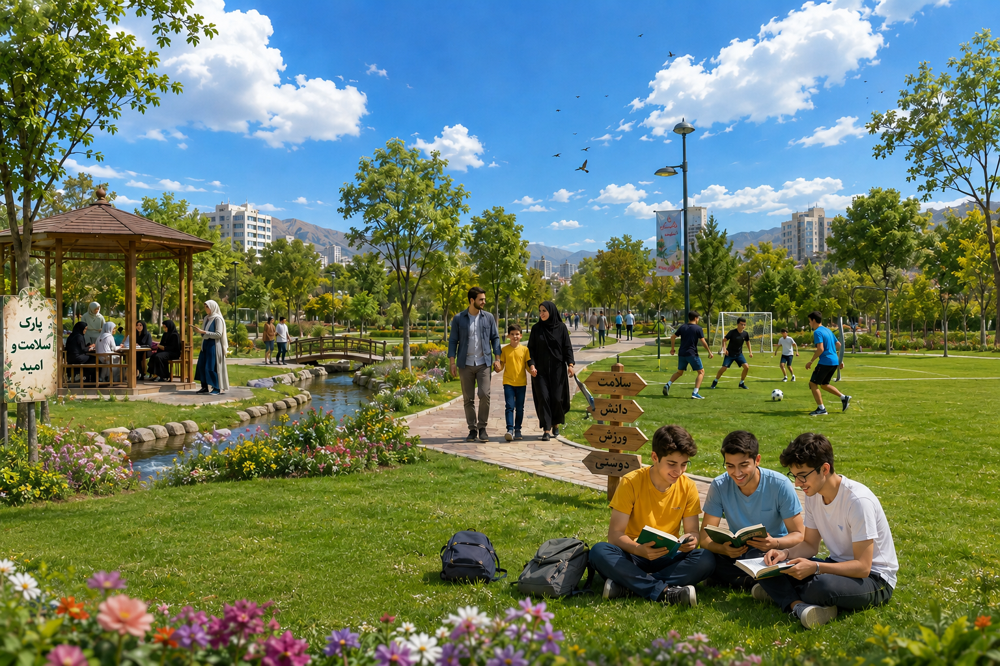

نوجوانی پلی میان کودکی و بزرگسالی است. در این دوران شخصیت، باورها و سبک زندگی شکل میگیرد و انتخابهای امروز میتوانند آینده فرد را بسازند.
بدن در این دوره به سرعت رشد میکند و به تغذیه سالم و خواب کافی نیاز دارد.
قدرت تصمیمگیری، یادگیری و حل مسئله در نوجوانی افزایش پیدا میکند.
مدیریت احساسات و شناخت هیجانها نقش مهمی در سلامت روان دارد.
دوستان خوب و ارتباط سالم، مسیر موفقیت را هموار میکنند.
در این دوران تغییرات جسمی، ذهنی و عاطفی رخ میدهد. شناخت این تغییرات باعث میشود نوجوان بهتر با چالشهای زندگی روبهرو شود.
داشتن خواب کافی، تغذیه سالم، ورزش منظم، مطالعه و مدیریت زمان باعث افزایش تمرکز، انرژی و موفقیت میشود.
اعتمادبهنفس، نه گفتن، کنترل استرس، حل مسئله، مسئولیتپذیری و هدفگذاری از مهمترین مهارتهایی هستند که آینده نوجوان را میسازند.
مغز انسان تا حدود ۲۵ سالگی همچنان در حال رشد است؛ به همین دلیل یادگیری مهارتهای زندگی و تصمیمگیری درست در دوران نوجوانی اهمیت بسیار زیادی دارد.